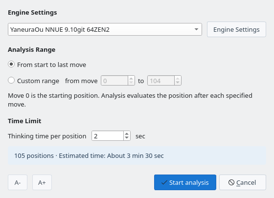
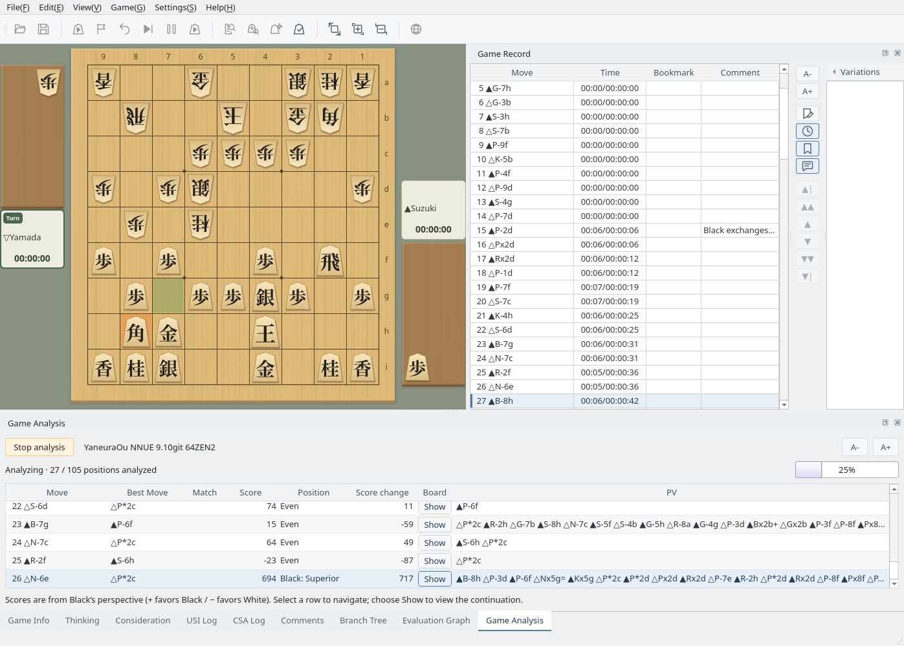
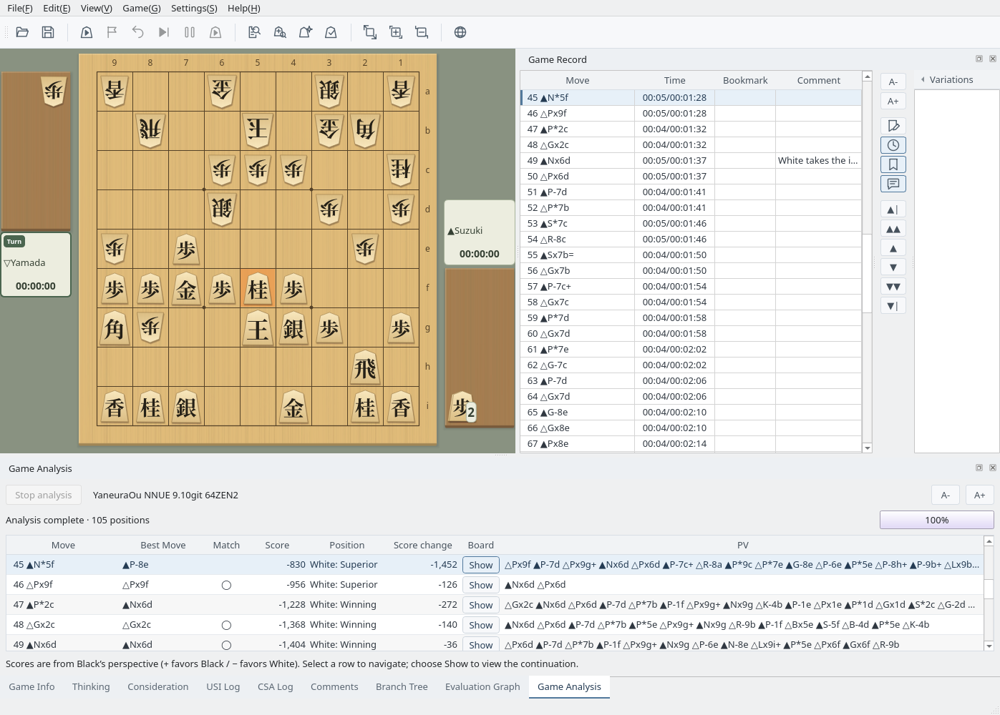
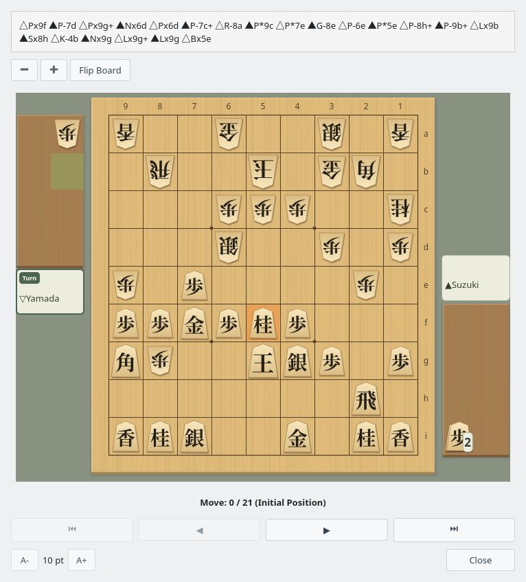
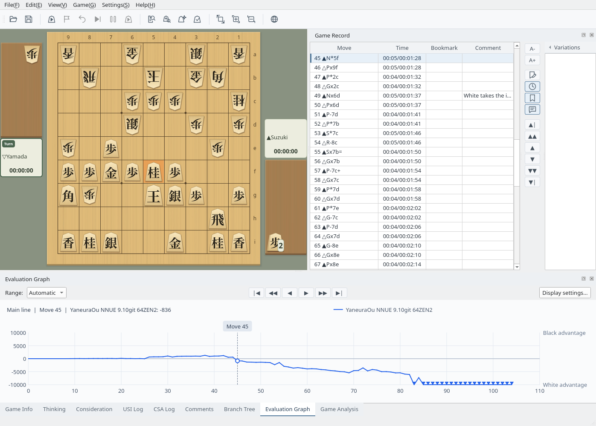

Analyze a game record with a USI engine and follow how the position changed
Screenshots were captured on Linux with the English interface.
Set the analysis conditions in the Game Analysis dialog
Show the game record you want to analyze. You can analyze a game right after playing it, or a record loaded with File → Open… (see Game Record Management). If a variation is shown, that variation is analyzed.
Choose Game → Analyze Game Record… (or the toolbar button) to open the Game Analysis dialog, and set the following:
The bottom of the dialog shows how many positions will be analyzed and an estimated time. Click Start analysis to begin. Your settings are restored next time. Terminal rows such as a resignation are not analyzed.

Game Analysis dialog: choose the engine, range, and thinking time
Review the score, best move, and principal variation of each analyzed position
Once analysis starts, the Game Analysis panel opens at the bottom and adds a row as each position is finished. The board and the game record move to the position being analyzed, and the evaluation graph is drawn as the analysis proceeds. A progress bar and the number of analyzed positions show how far it has gone.
To stop partway, click Stop analysis (or choose Game → Cancel Analysis). The results so far are kept. You cannot operate the game record or the board during analysis.

During analysis: the board follows the analyzed position and rows are added one by one
When the analysis finishes, the panel shows Analysis complete. The columns are:
| Column | Meaning |
|---|---|
| Move | The move in the game record. The position after this move is analyzed |
| Best Move | The move the engine judged best in the previous position |
| Match | Shows ◯ when the played move is the same as the best move |
| Score | Score from Black's point of view (+ favors Black, − favors White). A mate is shown as mate N |
| Position | The assessment based on the score (see Position Assessment Criteria below) |
| Score change | How much the score changed from the previous position (Black's point of view) |
| Board | Show plays the principal variation on a board |
| PV | The continuation the engine expects |
Select a row to move the board, the game record, and the evaluation graph to that position. A large score change marks a move that swung the game (here, move 45 ▲N*5f). The results stay until you start another analysis, load another record, or start a new game.

Analysis results: selecting a row moves to that position
Click Show in the Board column (or press Enter) to open the Principal Variation Display window, where you can step through the variation from that position. You can also flip and resize the board.

Principal Variation Display: step through the variation from the analyzed position
Follow how the game changed on a graph
The Evaluation Graph tab plots the analyzed scores from Black's point of view. Up favors Black and down favors White; positions with a mate are marked at the top or bottom edge. Click the graph to move to the position at that move.
Choose Automatic or Fixed for the range, and use Display settings… to change the ticks and font size. Save the graph image with File → Save Evaluation Graph Image to File…, or copy it with Edit → Copy Eval Graph Image.

Evaluation graph: the selected move and its score appear at the top
Positions are assessed on five levels from the score
| Score | Assessment | Display |
|---|---|---|
| 0 – 100 | Even | Even |
| 101 – 300 | Slight | Black: Slight / White: Slight |
| 301 – 600 | Better | Black: Better / White: Better |
| 601 – 1000 | Superior | Black: Superior / White: Superior |
| 1001 or more | Winning | Black: Winning / White: Winning |
| Mate | Win | Black wins / White wins |